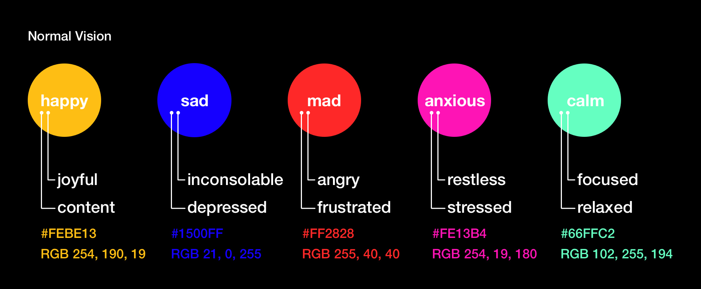

What Is Ambio?
Ambio is a contemporary take on the classic mood ring. Using the biometric tracking capabilities of wearable technology, Ambio interprets your emotions and shares them with the people closest to you. Built for iOS and Apple Watch.
Check out our teams process docs and learn more below.
Partner Connection
Ambio was born out of a dissatisfaction with current digital communication methods. Although powerful, mediums like Facetime and social media struggle to recreate the passive intimacies of in-person communication.
Ambio narrow this gap by providing further context into your interactions. Based on biometric data such as vocal tone and heart rate, Ambio generates a real-time data visualization of your emotional state and shares it with those closest to you.
iOS and Watch OS video demos below.
Mood Visualization
Ambios mood visualization is designed to convey emotional state through color and form.
Colors represent large generalizations of emotion such as happiness or anger. Each color we selected is uniquely tied to the psychological relation humans have with color. Happiness is bubbly and yellow, anger is aggressive and red, sadness is mellowed and blue. You can find Ambios complete color key below.

Each of Ambios color generalizations encompass a subset of more descriptive emotional states. The form of Ambios visualization is intended to represent this sub-emotion and express how the user is outwardly conveying that emotion.
For example, joyfulness and content both exist inside the happiness generalization. They will both be yellow. However, content is often an internal emotional state, while joyfulness is often conveyed outwardly. The form of Ambio will represent that. A visualization of content will appear controlled and smooth, while joyfulness will appear more erratic and energetic.
Below are demo visualizations of focus and relaxation from the calm mood generalization.
Ambio Exhibt
During Imagine RIT 2017, we showed Ambio to the world. Highlights below.
Team
Conner Hasbrouck, Colton Woytas, Julianne Burke, Jessica Witley, Sudarshan Ashok, Vincent Lin, Josh Ladisic